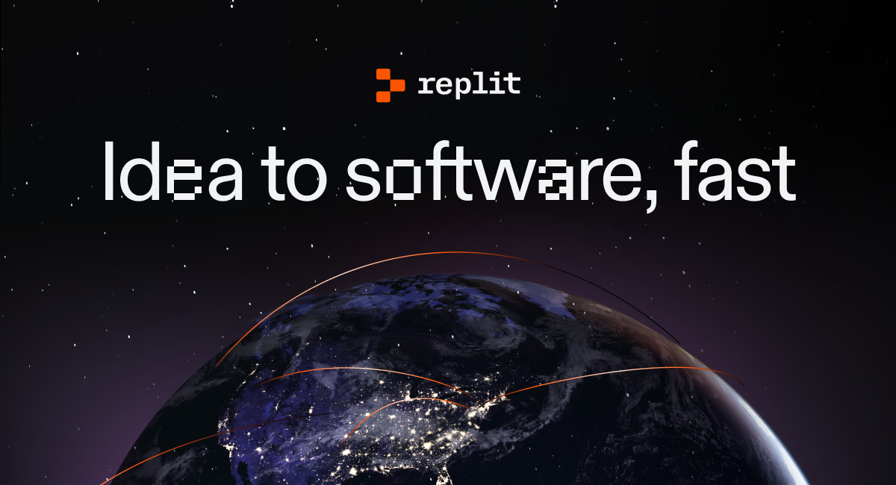

Hey!
Hey!
Hey!
Hey!
More about me..
Okay sure.. that's not as descriptive of who I am. I do many things, whether tinkering with code
or making fun relationships with the people that end up stuck with
me that I talk with daily.
Here's some examples of projects I've made. Click them to view their Git repository!
sprig CLI
Ever wanted to manage your Sprig from the command line? No?
That's fine. The sprig CLI exists regardless. Flash new firmware, upload a game or check your Sprig's version, all from the comfort of your own computer's terminal!
That's fine. The sprig CLI exists regardless. Flash new firmware, upload a game or check your Sprig's version, all from the comfort of your own computer's terminal!
made for Hack Club's High Seas
Battler Generator
The Battler Generator hosts all assets for Battle Master's
Battler shop! It allows players to customize their very own Battler (character), and view them on
their profiles, in battle against an AI opponent or another player!
Bringing turn based combat to your Discord server
Bringing turn based combat to your Discord server
osu! slack
Around the time of Arcade, I got into this funny rhythm game
called osu. I even got a drawing tablet just to play the game better. So I decided, why not
make a fun bot out of it?
It has account linking, leaderboards, multiplayer support and shows the daily challenge everyday!
It has account linking, leaderboards, multiplayer support and shows the daily challenge everyday!
made for Hack Club's Arcade
My "Experience"
Apart from being a developer, I'm also a community moderator, and moderate multiple communities on
multiple platforms:
Replit

Replit is an AI-powered software development & deployment
platform for building, sharing, and shipping software fast.
But before that, Replit was a code-sharing platform where beginners to coding could learn and share. I used to moderate the site from December 2022 to April 2024: catching all sorts of incidents from basic annoyance to platform abuse.
But before that, Replit was a code-sharing platform where beginners to coding could learn and share. I used to moderate the site from December 2022 to April 2024: catching all sorts of incidents from basic annoyance to platform abuse.
r/UndertaleYellow Discord
(artwork by Figburn)
After Replit, the next biggest thing I'd go on to moderate is
r/UndertaleYellow's Discord server. While member size it isn't that large, it's had way more
an active community than many other platforms I've moderated. I joined the moderation team
in September 2024 and to this day, still moderate it.
Battle Master Universe
(artwork by Homeannor)
Battle Master Universe is a Discord server I have been and
moderated since the dawn of my career. It initially started as a support server for a
Discord bot called Houseannor, before transforming into a game development server for
Homeannor's games, before transforming back into a Discord bot support + community server
for Battle Master.
I've been a moderator there since October 2020 and to this day still moderate the server! (Wow I'm old.)
I've been a moderator there since October 2020 and to this day still moderate the server! (Wow I'm old.)
Contact Me!
DM me on Discord: dainfloop. I have friend requests open!
You can also reach me by email by emailing me at
mail@dainfloop.is-a.dev.